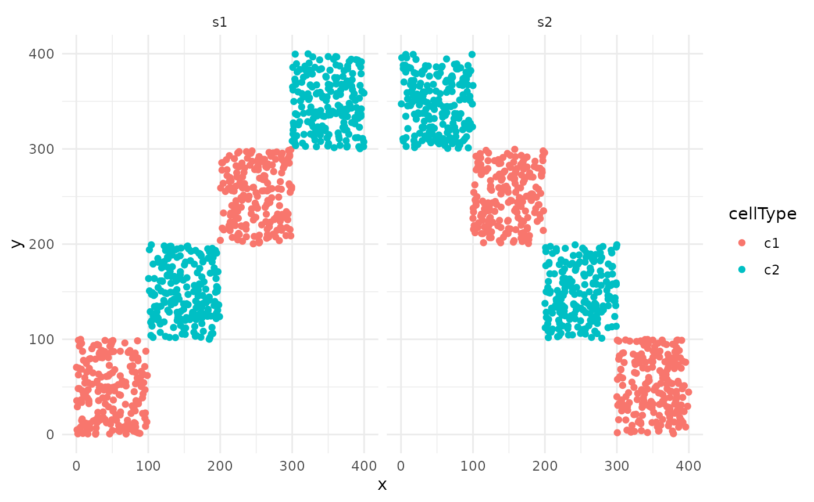
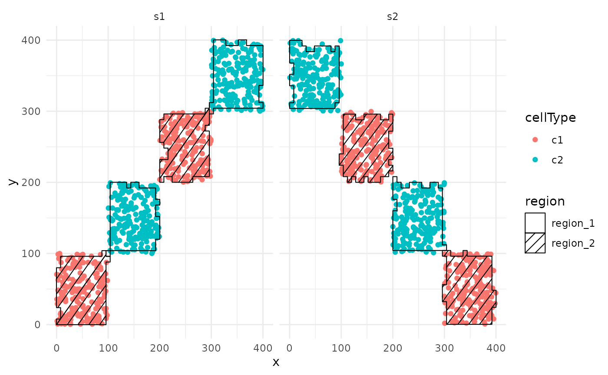
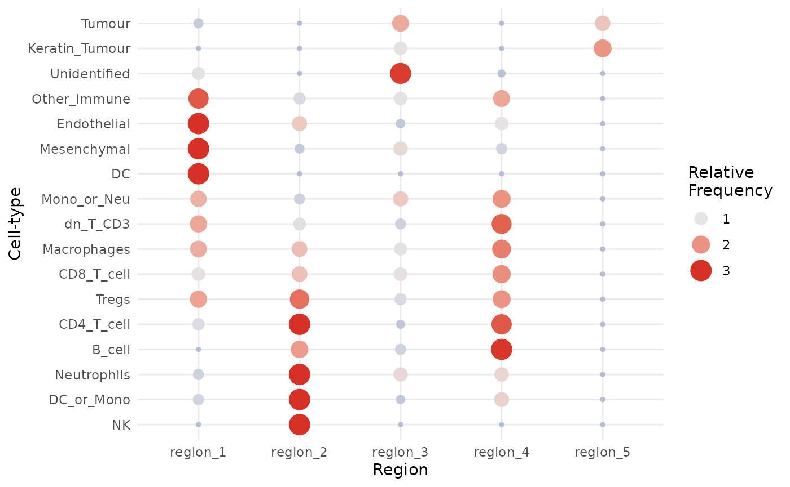
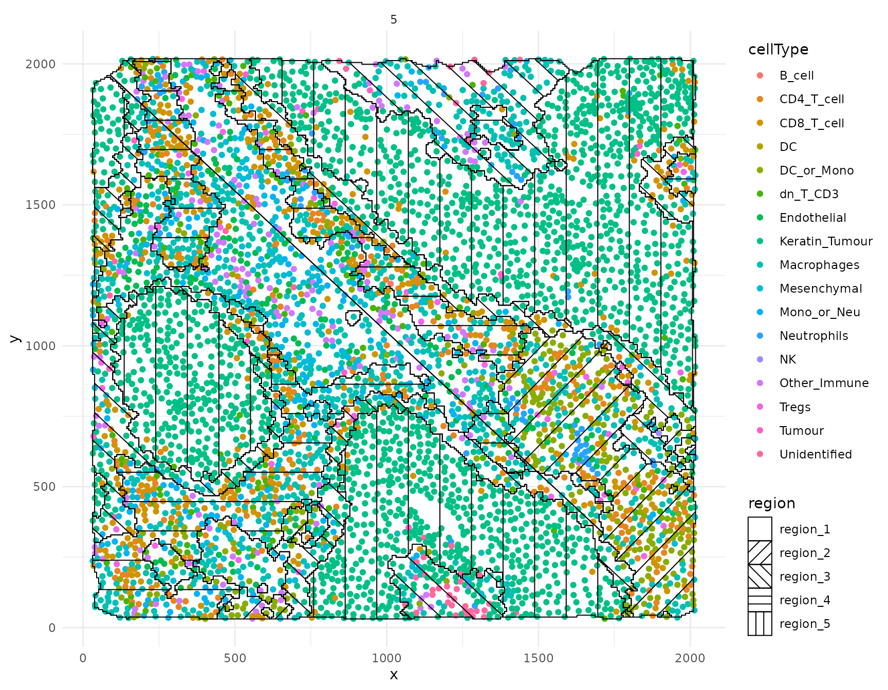

Introduction to Clustering of Local Indicators of Spatial Assocation (LISA) curves
Nicolas Canete
Westmead Institute for Medical Research, University of Sydney, Australianicolas.canete@sydney.edu.au
Ellis Patrick
Westmead Institute for Medical Research, University of Sydney, AustraliaSchool of Mathematics and Statistics, University of Sydney, Australiaellis.patrick@sydney.edu.au
Alex Run Qin
Westmead Institute for Medical Research, University of Sydney, AustraliaSchool of Mathematics and Statistics, University of Sydney, Australiaalex.qin@sydney.edu.au
17 November 2024
Source:vignettes/lisaClust.Rmd
lisaClust.RmdAbstract
Identify and visualise regions of cell type colocalization in multiplexed imaging data that has been segmented at a single-cell resolution.
Installation
if (!require("BiocManager")) {
install.packages("BiocManager")
}
BiocManager::install("lisaClust")Overview
Clustering local indicators of spatial association (LISA) functions
is a methodology for identifying consistent spatial organisation of
multiple cell-types in an unsupervised way. This can be used to enable
the characterization of interactions between multiple cell-types
simultaneously and can complement traditional pairwise analysis. In our
implementation our LISA curves are a localised summary of an L-function
from a Poisson point process model. Our framework lisaClust
can be used to provide a high-level summary of cell-type colocalization
in high-parameter spatial cytometry data, facilitating the
identification of distinct tissue compartments or identification of
complex cellular microenvironments.
Quick start
Generate toy data
To illustrate our lisaClust framework, we consider a
very simple toy example where two cell-types are completely separated
spatially. We simulate data for two different images.
set.seed(51773)
x <- round(c(
runif(200), runif(200) + 1, runif(200) + 2, runif(200) + 3,
runif(200) + 3, runif(200) + 2, runif(200) + 1, runif(200)
), 4) * 100
y <- round(c(
runif(200), runif(200) + 1, runif(200) + 2, runif(200) + 3,
runif(200), runif(200) + 1, runif(200) + 2, runif(200) + 3
), 4) * 100
cellType <- factor(paste("c", rep(rep(c(1:2), rep(200, 2)), 4), sep = ""))
imageID <- rep(c("s1", "s2"), c(800, 800))
cells <- data.frame(x, y, cellType, imageID)
ggplot(cells, aes(x, y, colour = cellType)) +
geom_point() +
facet_wrap(~imageID) +
theme_minimal()
Create Single Cell Experiment object
First we store our data in a SingleCellExperiment
object.
SCE <- SingleCellExperiment(colData = cells)
SCE
## class: SingleCellExperiment
## dim: 0 1600
## metadata(0):
## assays(0):
## rownames: NULL
## rowData names(0):
## colnames: NULL
## colData names(4): x y cellType imageID
## reducedDimNames(0):
## mainExpName: NULL
## altExpNames(0):Running lisaCLust
We can then use the convenience function lisaClust to
simultaneously calculate local indicators of spatial association (LISA)
functions and perform k-means clustering. The number of clusters can be
specified with the k = parameter. In the example below,
we’ve chosen k = 2, resulting in a total of 2 clusters. The
cell type column can be specified using the cellType =
argument. By default, lisaClust uses the column named
cellType.
The clusters identified by lisaClust are stored in
colData of the SingleCellExperiment object as
a new column called regions.
SCE <- lisaClust(SCE, k = 2)
colData(SCE) |> head()
## DataFrame with 6 rows and 5 columns
## x y cellType imageID region
## <numeric> <numeric> <factor> <character> <character>
## 1 36.72 38.58 c1 s1 region_2
## 2 61.38 41.29 c1 s1 region_2
## 3 33.59 80.98 c1 s1 region_2
## 4 50.17 64.91 c1 s1 region_2
## 5 82.93 35.60 c1 s1 region_2
## 6 83.13 2.69 c1 s1 region_2Plot identified regions
lisaClust also provides the convenient
hatchingPlot function to visualise the different regions
that have been demarcated by the clustering. hatchingPlot
outputs a ggplot object where the regions are marked by
different hatching patterns. In a real biological dataset, this allows
us to plot both regions and cell-types on the same visualization.
In the example below, we can visualise our stimulated data where our
2 cell types have been separated neatly into 2 distinct regions based on
which cell type each region is dominated by. region_2 is
dominated by the red cell type c1, and
region_1 is dominated by the blue cell type
c2.
hatchingPlot(SCE, useImages = c("s1", "s2"))
## Using other clustering methods.While the lisaClust function is convenient, we have not
implemented an exhaustive suite of clustering methods as it is very easy
to do this yourself. There are just two simple steps.
Generate LISA curves
We can calculate local indicators of spatial association (LISA)
functions using the lisa function. Here the LISA curves are
a localised summary of an L-function from a Poisson point process model.
The radii that will be calculated over can be set with
Rs.
lisaCurves <- lisa(SCE, Rs = c(20, 50, 100))
head(lisaCurves)
## 20_c1 20_c2 50_c1 50_c2 100_c1 100_c2
## cell_1 5.556700 -2.764143 15.631209 -6.910357 11.733097 -9.198914
## cell_2 4.833149 -2.764143 13.940407 -6.910357 9.532662 -8.543440
## cell_3 5.918476 -2.764143 9.008588 -6.910357 9.157887 -7.813862
## cell_4 4.109597 -2.764143 11.907928 -6.910357 8.404425 -8.140036
## cell_5 3.024270 -2.764143 10.159278 -6.910357 9.006286 -8.283564
## cell_6 7.986742 -2.764143 8.675070 -6.910357 12.859615 -13.820714Perform some clustering
The LISA curves can then be used to cluster the cells. Here we use
k-means clustering. However, other clustering methods like SOM could
also be used. We can store these cell clusters or cell “regions” in our
SingleCellExperiment object.
# Custom clustering algorithm
kM <- kmeans(lisaCurves, 2)
# Storing clusters into colData
colData(SCE)$custom_region <- paste("region", kM$cluster, sep = "_")
colData(SCE) |> head()
## DataFrame with 6 rows and 6 columns
## x y cellType imageID region custom_region
## <numeric> <numeric> <factor> <character> <character> <character>
## 1 36.72 38.58 c1 s1 region_2 region_2
## 2 61.38 41.29 c1 s1 region_2 region_2
## 3 33.59 80.98 c1 s1 region_2 region_2
## 4 50.17 64.91 c1 s1 region_2 region_2
## 5 82.93 35.60 c1 s1 region_2 region_2
## 6 83.13 2.69 c1 s1 region_2 region_2Keren et al. breast cancer data.
Next, we apply our lisaClust framework to two images of
breast cancer obtained by Keren et al.
(2018).
Read in data
We will start by reading in the data from the
SpatialDatasets package as a
SingleCellExperiment object. Here the data is in a format
consistent with that outputted by CellProfiler.
kerenSPE <- SpatialDatasets::spe_Keren_2018()Generate LISA curves
This data includes annotation of the cell-types of each cell. Hence,
we can move directly to performing k-means clustering on the local
indicators of spatial association (LISA) functions using the
lisaClust function, remembering to specify the
imageID, cellType, and
spatialCoords columns in colData. For the
purpose of demonstration, we will be using only images 5 and 6 of the
kerenSPE dataset.
These regions are stored in colData and can be
extracted.
colData(kerenSPE)[, c("imageID", "region")] |>
head(20)
## DataFrame with 20 rows and 2 columns
## imageID region
## <character> <character>
## 21154 5 region_4
## 21155 5 region_4
## 21156 5 region_4
## 21157 5 region_3
## 21158 5 region_3
## ... ... ...
## 21169 5 region_3
## 21170 5 region_3
## 21171 5 region_1
## 21172 5 region_3
## 21173 5 region_1Examine cell type enrichment
lisaClust also provides a convenient function,
regionMap, for examining which cell types are located in
which regions. In this example, we use this to check which cell types
appear more frequently in each region than expected by chance.
Here, we clearly see that healthy epithelial and mesenchymal tissue are highly concentrated in region 1, immune cells are concentrated in regions 2 and 4, whilst tumour cells are concentrated in region 3.
We can further segregate these cells by increasing the number of
clusters, i.e., increasing the parameter k = in the
lisaClust() function. For the purposes of demonstration,
let’s take a look at the hatchingPlot of these regions.
regionMap(kerenSPE,
type = "bubble"
)
Plot identified regions
Finally, we can use hatchingPlot to construct a
ggplot object where the regions are marked by different
hatching patterns. This allows us to visualize the 5 regions and 17
cell-types simultaneously.
hatchingPlot(kerenSPE, nbp = 300)
sessionInfo()
sessionInfo()
## R version 4.4.2 (2024-10-31)
## Platform: x86_64-pc-linux-gnu
## Running under: Ubuntu 22.04.5 LTS
##
## Matrix products: default
## BLAS: /usr/lib/x86_64-linux-gnu/openblas-pthread/libblas.so.3
## LAPACK: /usr/lib/x86_64-linux-gnu/openblas-pthread/libopenblasp-r0.3.20.so; LAPACK version 3.10.0
##
## locale:
## [1] LC_CTYPE=C.UTF-8 LC_NUMERIC=C LC_TIME=C.UTF-8
## [4] LC_COLLATE=C.UTF-8 LC_MONETARY=C.UTF-8 LC_MESSAGES=C.UTF-8
## [7] LC_PAPER=C.UTF-8 LC_NAME=C LC_ADDRESS=C
## [10] LC_TELEPHONE=C LC_MEASUREMENT=C.UTF-8 LC_IDENTIFICATION=C
##
## time zone: UTC
## tzcode source: system (glibc)
##
## attached base packages:
## [1] stats4 stats graphics grDevices utils datasets methods
## [8] base
##
## other attached packages:
## [1] SpatialDatasets_1.4.0 SpatialExperiment_1.16.0
## [3] ExperimentHub_2.14.0 AnnotationHub_3.14.0
## [5] BiocFileCache_2.14.0 dbplyr_2.5.0
## [7] SingleCellExperiment_1.28.1 SummarizedExperiment_1.36.0
## [9] Biobase_2.66.0 GenomicRanges_1.58.0
## [11] GenomeInfoDb_1.42.0 IRanges_2.40.0
## [13] S4Vectors_0.44.0 BiocGenerics_0.52.0
## [15] MatrixGenerics_1.18.0 matrixStats_1.4.1
## [17] ggplot2_3.5.1 spicyR_1.18.0
## [19] lisaClust_1.15.5 BiocStyle_2.34.0
##
## loaded via a namespace (and not attached):
## [1] later_1.3.2 splines_4.4.2
## [3] bitops_1.0-9 filelock_1.0.3
## [5] svgPanZoom_0.3.4 tibble_3.2.1
## [7] polyclip_1.10-7 lifecycle_1.0.4
## [9] rstatix_0.7.2 lattice_0.22-6
## [11] MASS_7.3-61 MultiAssayExperiment_1.32.0
## [13] backports_1.5.0 magrittr_2.0.3
## [15] sass_0.4.9 rmarkdown_2.29
## [17] jquerylib_0.1.4 yaml_2.3.10
## [19] httpuv_1.6.15 ClassifyR_3.10.0
## [21] sp_2.1-4 spatstat.sparse_3.1-0
## [23] DBI_1.2.3 minqa_1.2.8
## [25] RColorBrewer_1.1-3 abind_1.4-8
## [27] zlibbioc_1.52.0 purrr_1.0.2
## [29] RCurl_1.98-1.16 tweenr_2.0.3
## [31] rappdirs_0.3.3 GenomeInfoDbData_1.2.13
## [33] spatstat.utils_3.1-1 terra_1.7-83
## [35] pheatmap_1.0.12 goftest_1.2-3
## [37] simpleSeg_1.8.0 spatstat.random_3.3-2
## [39] svglite_2.1.3 pkgdown_2.1.1
## [41] codetools_0.2-20 DelayedArray_0.32.0
## [43] ggforce_0.4.2 tidyselect_1.2.1
## [45] raster_3.6-30 UCSC.utils_1.2.0
## [47] farver_2.1.2 viridis_0.6.5
## [49] lme4_1.1-35.5 spatstat.explore_3.3-3
## [51] jsonlite_1.8.9 Formula_1.2-5
## [53] survival_3.7-0 systemfonts_1.1.0
## [55] tools_4.4.2 ragg_1.3.3
## [57] Rcpp_1.0.13-1 glue_1.8.0
## [59] gridExtra_2.3 SparseArray_1.6.0
## [61] xfun_0.49 mgcv_1.9-1
## [63] ggthemes_5.1.0 EBImage_4.48.0
## [65] HDF5Array_1.34.0 dplyr_1.1.4
## [67] shinydashboard_0.7.2 scam_1.2-17
## [69] withr_3.0.2 numDeriv_2016.8-1.1
## [71] BiocManager_1.30.25 fastmap_1.2.0
## [73] ggh4x_0.2.8 rhdf5filters_1.18.0
## [75] boot_1.3-31 fansi_1.0.6
## [77] digest_0.6.37 mime_0.12
## [79] R6_2.5.1 textshaping_0.4.0
## [81] colorspace_2.1-1 tensor_1.5
## [83] jpeg_0.1-10 spatstat.data_3.1-4
## [85] RSQLite_2.3.7 utf8_1.2.4
## [87] tidyr_1.3.1 generics_0.1.3
## [89] data.table_1.16.2 class_7.3-22
## [91] httr_1.4.7 htmlwidgets_1.6.4
## [93] S4Arrays_1.6.0 pkgconfig_2.0.3
## [95] gtable_0.3.6 blob_1.2.4
## [97] XVector_0.46.0 htmltools_0.5.8.1
## [99] carData_3.0-5 bookdown_0.41
## [101] fftwtools_0.9-11 scales_1.3.0
## [103] ggupset_0.4.0 png_0.1-8
## [105] spatstat.univar_3.1-1 knitr_1.49
## [107] reshape2_1.4.4 rjson_0.2.23
## [109] nlme_3.1-166 curl_6.0.1
## [111] nloptr_2.1.1 bdsmatrix_1.3-7
## [113] rhdf5_2.50.0 cachem_1.1.0
## [115] stringr_1.5.1 BiocVersion_3.20.0
## [117] vipor_0.4.7 parallel_4.4.2
## [119] concaveman_1.1.0 AnnotationDbi_1.68.0
## [121] desc_1.4.3 pillar_1.9.0
## [123] grid_4.4.2 vctrs_0.6.5
## [125] coxme_2.2-22 promises_1.3.0
## [127] ggpubr_0.6.0 car_3.1-3
## [129] xtable_1.8-4 beeswarm_0.4.0
## [131] evaluate_1.0.1 magick_2.8.5
## [133] cli_3.6.3 locfit_1.5-9.10
## [135] compiler_4.4.2 rlang_1.1.4
## [137] crayon_1.5.3 ggsignif_0.6.4
## [139] labeling_0.4.3 ggbeeswarm_0.7.2
## [141] plyr_1.8.9 fs_1.6.5
## [143] stringi_1.8.4 viridisLite_0.4.2
## [145] nnls_1.6 deldir_2.0-4
## [147] BiocParallel_1.40.0 cytomapper_1.18.0
## [149] lmerTest_3.1-3 munsell_0.5.1
## [151] Biostrings_2.74.0 tiff_0.1-12
## [153] spatstat.geom_3.3-3 V8_6.0.0
## [155] Matrix_1.7-1 bit64_4.5.2
## [157] Rhdf5lib_1.28.0 shiny_1.9.1
## [159] KEGGREST_1.46.0 broom_1.0.7
## [161] memoise_2.0.1 bslib_0.8.0
## [163] bit_4.5.0